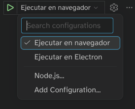

Desarrollo de prototipos con IA
Carlos León
Created: 2026-10-03 sáb 11:38
1. Índice
2. Herramientas de IA (I)
2.1. Cómo funciona una IA
2.1.1.
- ¡Hola! ¿Cómo estás?
- Muy bien, ¿y …
- … tú?
- … vosotros?
- … tu hermano?
- … ensalada de tomate?
2.1.2.
¿Cómo predecimos las siguientes palabras?
2.1.3. ¿Cómo entiende el lenguaje un ordenador?
- 8739874 18739874
- 084098091 170980470 09280948098 28 9409808 …
- … 09802984098?
- … 09820349809?
- … 0917987398 98579871?
- … 7138712987 581978 94 9871987?
2.1.4.
¿Cómo puede predecir un ordenador?
2.1.5.

Figura 1: ¡Es todo estadística!
2.1.6.

Figura 2: Pero le llamamos aprendizaje máquina
2.1.7.

Figura 3: Y son modelos complejos
2.1.8. El 30 de noviembre de 2022
¿Cómo se puede, con números, hacer ChatGPT?
2.1.9. Las ideas no son nuevas, ¿qué ha cambiado?
- Capacidad de cómputo
- Modelos nuevos
- Muchos datos
2.1.10. Gran escala
- Varios meses de entrenamiento
- Decenas de millones de dólares
- Decenas de terabytes de información
2.1.11.
¿Pero por qué funciona tan bien?
2.1.12.

Figura 4: Arquitectura Transformer
2.1.13.
Analiza todas las palabras a la vez, no una por una
2.1.14.
Representa las palabras como vectores de números, y lo hace analizando muchísimas frases ya escritas por personas
2.1.15. Ejemplos de encoding
"El perro corre" =
[ 0.21, -0.34, 0.89, 1.12, -0.56, 0.04, ... ]
"El gato corre" =
[ 0.24, -0.31, 0.85, 1.08, -0.52, 0.06, ... ]
2.1.16. Espacio latente = «mundo interno» donde la IA piensa
- Cada conjunto de números es un concepto
- Las palabras que solemos usar de forma relacionada están cerca
2.1.17. Generar
Con esto, ya solo nos queda predecir, con estadística, la próxima palabra más probable
2.1.18. Hasta aquí
- Tenemos mucho texto escrito por humanos (Internet)
- Analizamos las palabras y les asignamos números cercanos si las palabras aparecen relacionadas
- Cuando tenemos unas pocas palabras escritas, ya podemos predecir la siguiente, y repetimos
2.1.19.
ChatGPT no sabe nada
No piensa
No entiende
Solo predice la próxima palabra más razonable
2.1.20. Conclusión
- La IA moderna no es magia, ni un modelo humano: es estadística
- Usar cantidad casi infinita de ejemplos ha hecho posible que se parezca a lo que hacemos los humanos
- Hay mucha IA diferente que se sigue usando
3. Herramientas de IA (II)
3.1. Vibe coding
4. Desarrollo en Phaser con IA (I)
4.1. Vibe coding con Phaser
4.1.1. Versiones de Phaser
- Es muy posible que el LLM tenga mucho contenido de versiones anteriores de Phaser (v2 y v3)
- Hay que saber identificar los problemas de API y corregir al modelo
4.2. Simulación
- Tener una cuenta en GitHub
- En GitHub, ir al repositorio de la plantilla de Phaser
- Pinchar en
 →
→ Create new repository
- Creará un repositorio nuevo con una copia de la plantilla
- Bajamos el repositorio con GitHub Desktop (recomendado), Tortoise o línea de comandos:
# Atención a poner la URL de SSH si queremos hacer `push' después
# Ejemplo:
<cleon@fdi.ucm.es ~>$ git clone git@github.com:cleongh/mvjvibecoding.git
4.3.

4.4.
4.5.

18:46-18:52 o por ahí
4.6. Podéis cambiar los datos de package.json
{
"name": "Nombre del paquete node",
"description": "Mi juego es genial",
"repository": {
"type": "git",
"url": "git+https://github.com/cleongh/MI-REPOSITORIO.git"
},
"author": "Yo <mi@correo.electronico>",
"bugs": {
"url": "https://github.com/cleongh/MI-REPOSITORIO/issues"
},
"homepage": "https://github.com/cleongh/MI-REPOSITORIO#readme"
}
4.7. Abrir el proyecto en VSCode
4.8. Y pedirle nos haga un «Link to the Past»

4.9. Y el resultado es funcional (GPT-6 Luna)

4.10. No es Zelda, pero
- Funciona (teclas del cursor + espacio)
- 3 bichos que nos persiguen y nos quitan vida
- Condición de victoria (coger 3 reliquias)
- Condición de pérdida (perder vida)
Ha hecho un juego funcional en unos minutos
4.11. Hacer commit de Git
- Es necesario tener bien configurado el cliente de Git porque el agente usa línea de comandos